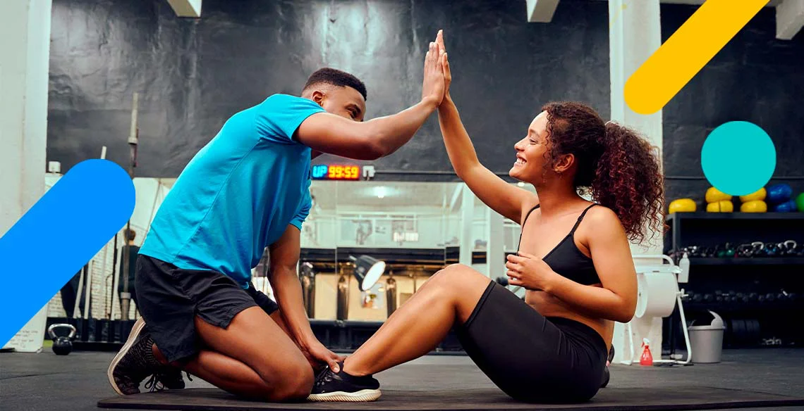

Uma alimentação de qualidade é importante em todas as fases da vida, principalmente na infância. A prática de uma alimentação balanceada e hábitos alimentares saudáveis desde a infância irão proporcionar um bom crescimento e desenvolvimento físico e intelectual.
Fisioterapia:
A fisioterapia tem como função diagnosticar e ajudar com problemas de movimentos e funções do corpo através de um conhecimento de técnicas e exercícios específicos.
Personal Trainner:
O personal trainer é um treinador pessoal. Ou seja, um profissional que ajuda os clientes a cuidarem do corpo e da saúde elaborando uma rotina de exercícios e supervisionando a execução das atividades físicas.
Psicólogo:
O psicólogo alimentar é o melhor profissional para ajudar na construção ou mudança de hábitos alimentares. Seja para assegurar uma dieta mais balanceada ou para lidar melhor com transtornos alimentares.
Nutricionista:
O Nutricionista tem o papel fundamental de analisar os efeitos dos alimentos no corpo humano e, com isso, determinar a quantidade ideal de nutrientes que cada um precisa ingerir, também são os responsáveis por criar dietas balanceadas para a manutenção da saúde.